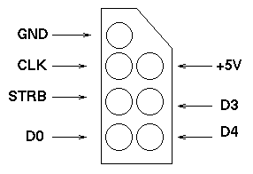
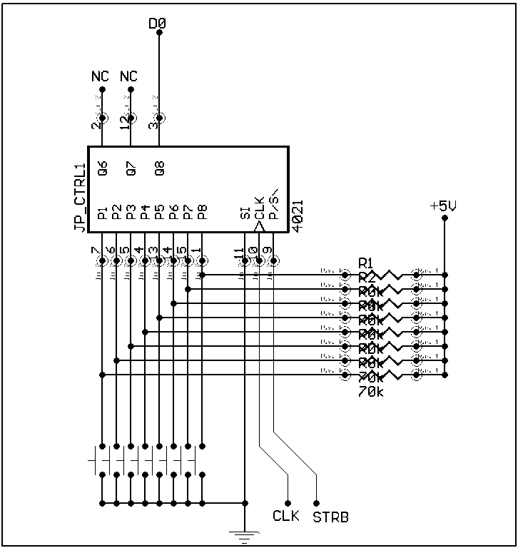

The NES controller interface is the prefered mean of interfacing with the user on the NES. It allows 2 (two) separate ports to read serial data from an external device operating at TTL voltage level. It provides access to 3 serial channels for each port, which are usually strobed than read using a PISO converter triggered by a clock signal. The strobe signals and clock signal generation are made by the software program currently running in the unit. Special circuitry in both the CPU and external I/O system are in charge of strobing the hardware and putting the data to/from the data BUS to/from the ports.
2- The connector

Figure 1: The controller port connector
GND -> The ground (0V) connection
CLK -> The clock signal for serial data control
STRB -> The strobe connection for circuit strobing
D0 -> 1st serial channel (usually used for joypad controller data)
+5V -> The positive 5V supply connection
D3/D4 -> The other two serial channels primarily used by the Zapper and other more sophisticated controllers
The 5V and GND provide power to the internal circuitry. Maximum power load acceptable is unknown, but considered to be extremely low.
3- The Joypads
The following account of the joypad theory of operation is based solely on my reverse engineering of the hardware itself by carefully tracing the circuit manually with the help of a multi-tester. Since I am NOT an electrical engineer or anything like that, this information could be totally erroneous. I sure hope it isn't, but in the event of the former, I would like to be notified of my mistakes :)

Figure 2: Schematic of the Joypad circuit.
The preceding schematic was made from the reverse-engineering of a NES controller from a front-loading US/Canadian model. The pushbuttons are, from left to right: Right, Left, Down, Up, Start, Select, B and A.
What the circuit contains:
4021 8-bit static shift register
8 PCB film resistors of about 70Kohm (couldn't get accurate reading though)
8 Pushbuttons made from PCB contacts with a conductive plastics part for each
A connector
How it works:
The 4021 has inverting inputs. Every time the Strobe (STRB) connection gets a HIGH then LOW signal, the data on the 8 parrallel inputs gets latched in the register. Since the inputs of the 4021 are inverting, the 8 resistors act as pull-up resistors to the +5V making the input HIGH by default. When a button is pressed, 0V is allowed to the input, thus enabling the state in the register. The serial data input is tied to 0V so as not to act upon the internal flip-flops of the 4021. Then, everytime the Clock (CLK) connection gets a HIGH signal, rightmost bit (P8) is sent to D0 through Q8. After 8 shift, the entire register is zero and thus all other read return a 0 state. The operation of this device is extremely simple, and making a home-made controller should cost less than 1US$ of parts (4021 is 0.25US$ and resistors are extra cheap at www.jameco.com).
4- Contact information
This page was made by Tennessee Carmel-Veilleux (veilleux@ameth.org). Report any errors or bugs to the preceding address.
5- References
NESTUFF.TXT by Kevin Horton (khorton@iquest.net) for part of the connector pinout
Data sheet for the Phillips Semiconductor HEF4021B 8-bit static shift register